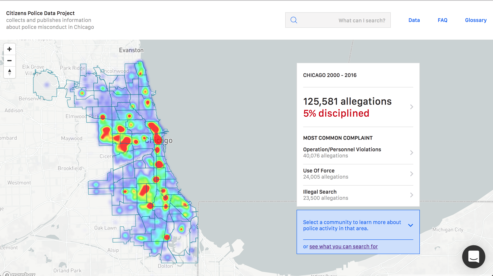

CPDP is an online resource of Chicago police data. It contains a ton of data that can be complicated to navigate, especially for people who haven't come in contact with large datasets.
There are various user types for the tool, including community members. One of their high level needs is “information that is easily accessible and readily packaged”. To attend to this need, I want to create a “configurator” for everyday citizens without data knowledge to generate a Neighborhood Report chronicling the police misconduct in their neighborhood. After selecting the type of information they're interested in, they’ll be able to generate a downloadable PDF Neighborhood Report that could be printed or distributed. My hope is that this configurator will be visually appealing, straightforward, and not time consuming.